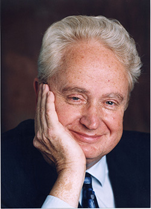

BOB LINDGREN'S BIOGRAPHY
Bob was born in Chicago, Illinois and was a third generation Chicagoan before moving to Los Angeles in 1982. He is a graduate of the University of Chicago Graduate School of Business from which he holds a Master's Degree in Accounting and Finance.
His experience with the printing industry began with the Neely Printing Company (Chicago) where he worked part-time while going to college and full-time thereafter. Leaving as Accounting Manager for that firm, having worked both in the Chicago and Spencer, Indiana plants, he joined the staff of the Printing Industry of Illinois Association where he ultimately became General Manager.
Bob joined the Printing Industries Association, Inc. of Southern California (PIASC) in 1982 as Executive Director and then became President and Chief Executive Officer. At the height of the printing industry, under Bob's leadership, the Association grew to 1,400 member firms and was served by a staff of 62 employees. Today, PIASC is still the largest local printing industry association in the United States.
When PIASC was recognized by the Printing Industries of America as the Local Affiliate of the Year in 1990, Bob was awarded with the PIASC's Ben Franklin Award and named Executive of the Year in 1991. Following he was then inducted into Printing Industries of America's Ben Franklin Society in 2010.
Bob has served as a member of the Executive Committee, Board of Directors and numerous committees and task forces of Printing Industries of America. He is a former trustee of Don Bosco Technical Institute in Rosemead, California; Treasurer and Trustee of the International Printing Museum in Carson, California; Trustee of the Printing Industries Consolidated Trust; Trustee of the GCIU Local 404 Health and Welfare Fund; Co-Chairman and Trustee of the GCIU National Health and Welfare Fund and Trustee of the GCIU Supplemental Early Retirement and Disability Fund. He is a member of the American Society of Association Executives and the California Society of Association Executives.
He is a frequent speaker and seminar leader on management of the printing industry throughout the United States and Canada and author of numerous articles for the trade press. He will continue to be the voice of financial and print management for PIASC in his new role as Management and Business Advisor.
Bob has been a resident of California for 35 years and now he and his wife Lina will be moving east to the lovely city of Weldon Springs, Missouri joining their son, Nick; daughter-in-law, Alice; and their beautiful granddaughter, Emily.